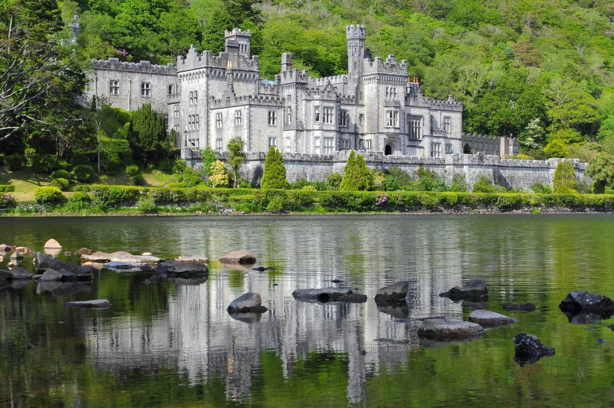
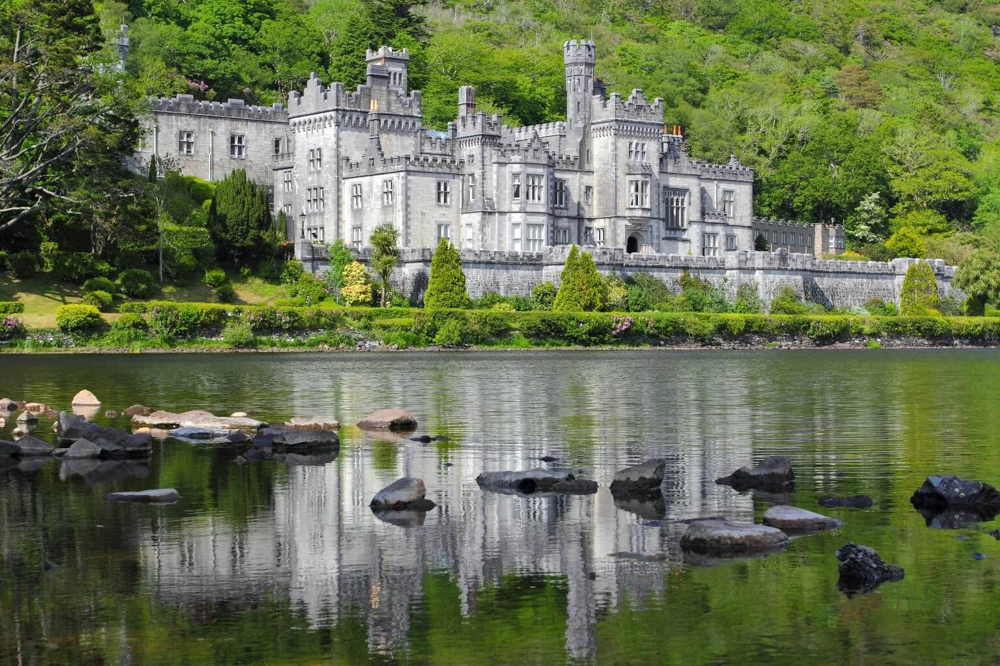
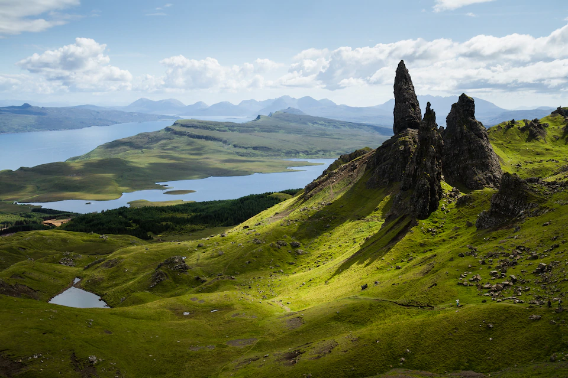
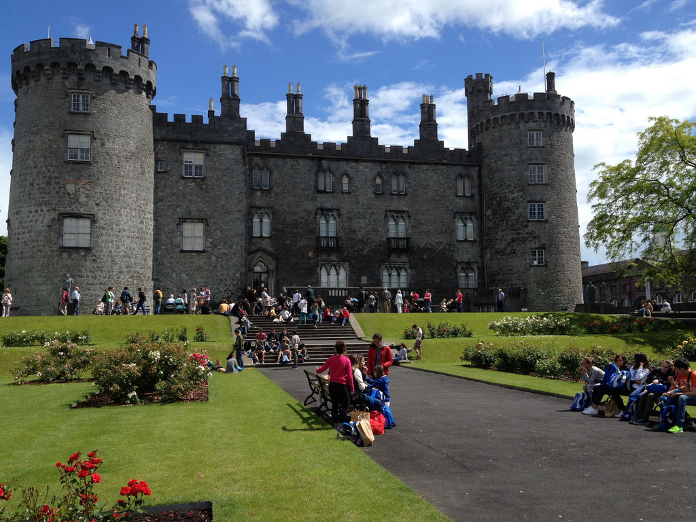
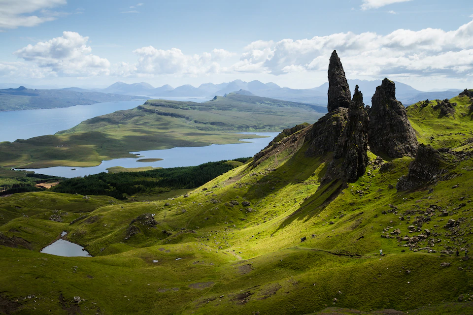
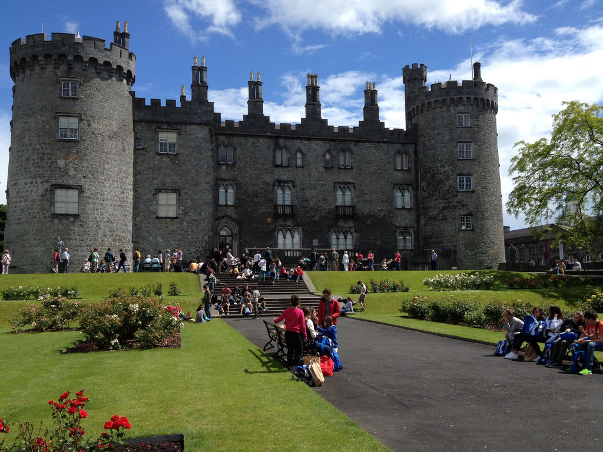

L'Irlande est une république parlementaire dont les deux langues officielles sont l'irlandais et l'anglais. L'Irlande est membre de l'Union européenne depuis 1973. Afin de la différencier de l'île d'Irlande, on la nomme parfois « République d'Irlande». Le pays s'étend sur une superficie de 70 273 km2, et sa population s'élève en 2017 à 5 011 102 habitants. La plus grande ville est la capitale Dublin, puis viens Cork et les autres sont mineur en terme de démographie.
Dublin est une ville très cosmopolite dans laquelle il est facile de trouver un petit boulot si vous voulez prolonger votre séjour. Il s'agit également de la ville la plus attractive que ce soit en terme de fête, activité, musées.
Son quartier le plus connu est temple bar, qui regroupe les bars les plus touristique, mais certains légèrement plus excentrés tel que le no name sont moins cher et tout aussi conviviaux
Les restaurants sont peu cher voir meme prix que les restaurant français, en revanche les snack sont bien plus onéreux, ce qui est assez paradoxal.


Laissez vous aller au cours d'une visite des différents bar du quartier du Temple Bar. Vous y découvrirez les différentes spécialité local (notamment la guiness et le whisky) ainsi que la convivialité que ces établissement ont a offrir
Dans la plus grande rue de Dublin, Dame Street se trouve le restaurant Hailan Korean qui propose des plats coréen/japonnais et d'autre spécialités pour seulement 10€ le midi, foncez!
Approchez de près la vie sauvage disséminé dans les différents parcs de Dublin, que ce soit des troupeau ou une faune plus discrete, les parc sont riche de vie et d'authenticité
L'irlande ne se limite pas a Dublin et offre un patrimoine historique a visiter aux quatre coin du pays
Entre fortifications médiévals, musées et balade sans fin dans le coeur de la nature irlandaise vous ne manquerez pas d'être dépaysé.
Vous pourrez vous reposer à bas prix dans des auberge de jeunesse et rencontrer la population locale qui ne vit pas dans la capitale.
 

Howth se situe a une petite heure de Dublin en transport. C'est la destination parfaite pour se balader sans partir à l'autre bout du pays, mélangeant les falaises typiquement irlandaise et la nature sauvage cet endroit est parfait pour une randonné d'un jour, pique-nique et apéro sur le chemin du retour biensure
Si vous êtes plus aventurier, alors un roadtrip de 3 jours s'impose! Partez faire le tour du pays en bus touristique et visiter les côtes les plus belles et connu du pays tout en passant par plusieurs ville touristique.
Enfin si vous n'êtes toujours pas rassasié, attaquez vous aux différent chateau d'Irlande qui sont disséminé un peu partout et parfois réellement au beau milieux de nul part. Vous serez au coeur de la nature et de son oeuvre sur les monuments qui peuple ces terres
 



Envie de voyager ? Laissez vous séduire par les Pays-bas et les paysages authentiques. Visiter les villes principales du pays , découvez des musées, activités et une gastronomie original et chargée d'histoire. Profitez de prix cassés pour la fin de saison 2020, des meilleurs hotels et d'une prise en charge de vos transport par vos super guides!
Réserver un séjour

Joris, jeune guide touristique
passioné de voyage